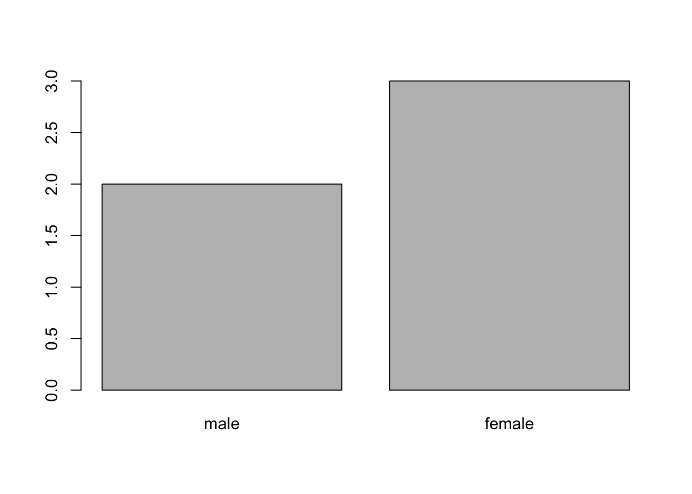
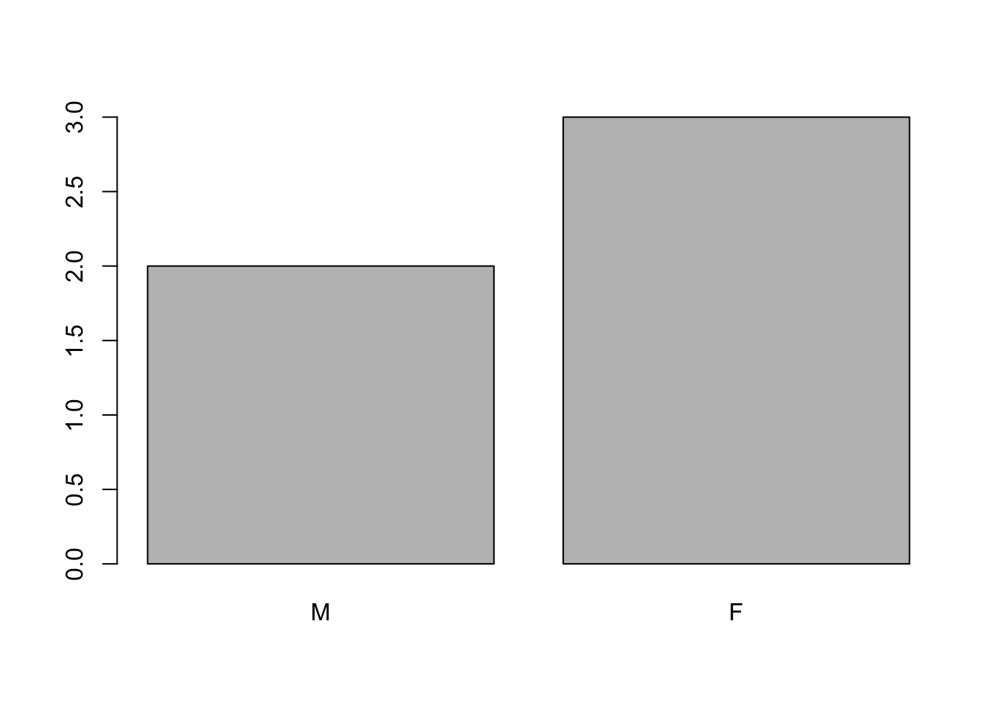

# Load library here
library(here)Introduction to data analysis with R and Bioconductor
1 Starting with data
1.1 Presentation of the gene expression data
We are going to use part of the data published by Blackmore et al. (2017), The effect of upper-respiratory infection on transcriptomic changes in the CNS. The goal of the study was to determine the effect of an upper-respiratory infection on changes in RNA transcription occurring in the cerebellum and spinal cord post infection. Gender matched eight week old C57BL/6 mice were inoculated with saline or with Influenza A by intranasal route and transcriptomic changes in the cerebellum and spinal cord tissues were evaluated by RNA-seq at days 0 (non-infected), 4 and 8.
The dataset is stored as a comma-separated values (CSV) file. Each row holds information for a single RNA expression measurement, and the first eleven columns represent:
| Column | Description |
|---|---|
| gene | The name of the gene that was measured |
| sample | The name of the sample the gene expression was measured in |
| expression | The value of the gene expression |
| organism | The organism/species - here all data stem from mice |
| age | The age of the mouse (all mice were 8 weeks here) |
| sex | The sex of the mouse |
| infection | The infection state of the mouse, i.e. infected with Influenza A or not infected. |
| strain | The Influenza A strain. |
| time | The duration of the infection (in days). |
| tissue | The tissue that was used for the gene expression experiment, i.e. cerebellum or spinal cord. |
| mouse | The mouse unique identifier. |
# Define the full path for the destination file
dest_path <- here("data", "rnaseq.csv")
# Create the directory structure if it does not exist
ifelse(
!dir.exists(dirname(dest_path)),
{
dir.create(dirname(dest_path), recursive = TRUE, showWarnings = FALSE)
"Directory Created"
},
"Directory Exists"
)
# Download the file if it does not exist
ifelse(
!file.exists(dest_path),
{
download.file(
url = "https://github.com/carpentries-incubator/bioc-intro/raw/main/episodes/data/rnaseq.csv",
destfile = dest_path
)
"File Downloaded"
},
"File Exists"
)# Load the CSV file
rna <- read.csv(dest_path)
# Have a look at the CSV file
rnaLet’s check the top (the first 6 lines) of this data frame using the function head():
head(rna)
Note
read.csv() assumes that fields are delineated by commas. However, in several countries, the comma is used as a decimal separator, and the semicolon (;) is used as a field delineator. If you want to read in this type of file in R, you can use the read.csv2() function. It behaves exactly like read.csv() but uses different parameters for the decimal and the field separators. If you are working with another format, they can both be specified by the user. Check out the help for read.csv() by typing ?read.csv to learn more. There is also the read.delim() function for reading tab-separated data files. It is important to note that all of these functions are actually wrapper functions for the main read.table() function with different arguments. As such, the data above could also have been loaded by using read.table() with the separation argument as ,. The code is as follows:
rna <- read.table(file = "data/rnaseq.csv",sep = ",",header = TRUE)The header argument has to be set to TRUE to be able to read the headers as by default read.table() has the header argument set to FALSE.
1.2 What are data frames?
Data frames are the de facto data structure for most tabular data, and what we use for statistics and plotting.
A data frame can be created by hand, but most commonly they are generated by the functions read.csv() or read.table(); in other words, when importing spreadsheets from your hard drive (or the web).
A data frame is the representation of data in the format of a table where the columns are vectors that all have the same length. Because columns are vectors, each column must contain a single type of data (e.g., characters, integers, factors). For example, here is a figure depicting a data frame comprising a numeric, a character, and a logical vector.

We can see this when inspecting the structure of a data frame with the function str():
str(rna)'data.frame': 32428 obs. of 19 variables:
$ gene : chr "Asl" "Apod" "Cyp2d22" "Klk6" ...
$ sample : chr "GSM2545336" "GSM2545336" "GSM2545336" "GSM2545336" ...
$ expression : int 1170 36194 4060 287 85 782 1619 288 43217 1071 ...
$ organism : chr "Mus musculus" "Mus musculus" "Mus musculus" "Mus musculus" ...
$ age : int 8 8 8 8 8 8 8 8 8 8 ...
$ sex : chr "Female" "Female" "Female" "Female" ...
$ infection : chr "InfluenzaA" "InfluenzaA" "InfluenzaA" "InfluenzaA" ...
$ strain : chr "C57BL/6" "C57BL/6" "C57BL/6" "C57BL/6" ...
$ time : int 8 8 8 8 8 8 8 8 8 8 ...
$ tissue : chr "Cerebellum" "Cerebellum" "Cerebellum" "Cerebellum" ...
$ mouse : int 14 14 14 14 14 14 14 14 14 14 ...
$ ENTREZID : int 109900 11815 56448 19144 80891 20528 97827 118454 18823 14696 ...
$ product : chr "argininosuccinate lyase, transcript variant X1" "apolipoprotein D, transcript variant 3" "cytochrome P450, family 2, subfamily d, polypeptide 22, transcript variant 2" "kallikrein related-peptidase 6, transcript variant 2" ...
$ ensembl_gene_id : chr "ENSMUSG00000025533" "ENSMUSG00000022548" "ENSMUSG00000061740" "ENSMUSG00000050063" ...
$ external_synonym : chr "2510006M18Rik" NA "2D22" "Bssp" ...
$ chromosome_name : chr "5" "16" "15" "7" ...
$ gene_biotype : chr "protein_coding" "protein_coding" "protein_coding" "protein_coding" ...
$ phenotype_description : chr "abnormal circulating amino acid level" "abnormal lipid homeostasis" "abnormal skin morphology" "abnormal cytokine level" ...
$ hsapiens_homolog_associated_gene_name: chr "ASL" "APOD" "CYP2D6" "KLK6" ...1.2.1 Inspecting data.frame Objects
We already saw how the functions head() and str() can be useful to check the content and the structure of a data frame. Here is a non-exhaustive list of functions to get a sense of the content/structure of the data. Let’s try them out!
Size:
dim(rna)- returns a vector with the number of rows as the first element, and the number of columns as the second element (the dimensions of the object).nrow(rna)- returns the number of rows.ncol(rna)- returns the number of columns.
Content:
head(rna)- shows the first 6 rows.tail(rna)- shows the last 6 rows.
Names:
names(rna)- returns the column names (synonym ofcolnames()fordata.frameobjects).rownames(rna)- returns the row names.
Summary:
str(rna)- structure of the object and information about the class, length and content of each column.summary(rna)- summary statistics for each column.
Note
Most of these functions are “generic”, they can be used on other types of objects besides data.frame.
Challenge
Based on the output of str(rna), can you answer the following questions?
What is the class of the object
rna?How many rows and how many columns are in this object?
Answer
class: data frame
how many rows: 66465, how many columns: 11
1.2.2 Indexing and subsetting data frames
Our rna data frame has rows and columns (it has 2 dimensions); if we want to extract some specific data from it, we need to specify the “coordinates” we want. Row numbers come first, followed by column numbers. However, note that different ways of specifying these coordinates lead to results with different classes.
# first element in the first column of the data frame (as a vector)
rna[1, 1]
# first element in the 6th column (as a vector)
rna[1, 6]
# first column of the data frame (as a vector)
rna[, 1]
# first column of the data frame (as a data.frame)
rna[1]
# first three elements in the 7th column (as a vector)
rna[1:3, 7]
# the 3rd row of the data frame (as a data.frame)
rna[3, ]
# equivalent to head_rna <- head(rna)
head_rna <- rna[1:6, ]
head_rna: is a special function that creates numeric vectors of integers in increasing or decreasing order, test 1:10 and 10:1 for instance. See section @ref(sec:genvec) for details.
You can also exclude certain indices of a data frame using the “-” sign:
rna[, -1] ## The whole data frame, except the first column
rna[-c(7:66465), ] ## Equivalent to head(rna)Data frames can be subsetted by calling indices (as shown previously), but also by calling their column names directly:
rna["gene"] # Result is a data.frame
rna[, "gene"] # Result is a vector
rna[["gene"]] # Result is a vector
rna$gene # Result is a vectorIn RStudio, you can use the autocompletion feature to get the full and correct names of the columns.
Challenge
Create a
data.frame(rna_200) containing only the data in row 200 of thernadataset.Notice how
nrow()gave you the number of rows in adata.frame?
Use that number to pull out just that last row in the initial
rnadata frame.Compare that with what you see as the last row using
tail()to make sure it’s meeting expectations.Pull out that last row using
nrow()instead of the row number.Create a new data frame (
rna_last) from that last row.
Use
nrow()to extract the row that is in the middle of thernadataframe. Store the content of this row in an object namedrna_middle.Combine
nrow()with the-notation above to reproduce the behavior ofhead(rna), keeping just the first through 6th rows of the rna dataset.
Answer
## 1.
rna_200 <- rna[200, ]
## 2.
## Saving `n_rows` to improve readability and reduce duplication
n_rows <- nrow(rna)
rna_last <- rna[n_rows, ]
## 3.
rna_middle <- rna[n_rows / 2, ]
## 4.
rna_head <- rna[-(7:n_rows), ]1.3 Factors
Factors represent categorical data. They are stored as integers associated with labels and they can be ordered or unordered. While factors look (and often behave) like character vectors, they are actually treated as integer vectors by R. So you need to be very careful when treating them as strings.
Once created, factors can only contain a pre-defined set of values, known as levels. By default, R always sorts levels in alphabetical order. For instance, if you have a factor with 2 levels:
sex <- factor(c("male", "female", "female", "male", "female"))R will assign 1 to the level "female" and 2 to the level "male" (because f comes before m, even though the first element in this vector is "male"). You can see this by using the function levels() and you can find the number of levels using nlevels():
levels(sex)[1] "female" "male" nlevels(sex)[1] 2Sometimes, the order of the factors does not matter, other times you might want to specify the order because it is meaningful (e.g., “low”, “medium”, “high”), it improves your visualization, or it is required by a particular type of analysis. Here, one way to reorder our levels in the sex vector would be:
sex ## current order[1] male female female male female
Levels: female malesex <- factor(sex, levels = c("male", "female"))
sex ## after re-ordering[1] male female female male female
Levels: male femaleIn R’s memory, these factors are represented by integers (1, 2, 3), but are more informative than integers because factors are self describing: "female", "male" is more descriptive than 1, 2. Which one is “male”? You wouldn’t be able to tell just from the integer data. Factors, on the other hand, have this information built-in. It is particularly helpful when there are many levels (like the gene biotype in our example dataset).
When your data is stored as a factor, you can use the plot() function to get a quick glance at the number of observations represented by each factor level. Let’s look at the number of males and females in our data.
plot(sex)
1.3.1 Converting to character
If you need to convert a factor to a character vector, you use as.character(x).
as.character(sex)[1] "male" "female" "female" "male" "female"1.3.2 3.2 Renaming factors
If we want to rename these factor, it is sufficient to change its levels:
levels(sex)[1] "male" "female"levels(sex) <- c("M", "F")
sex[1] M F F M F
Levels: M Fplot(sex)
Challenge
Rename “F” and “M” to “Female” and “Male” respectively.
Answer
levels(sex)[1] "M" "F"levels(sex) <- c("Male", "Female")
Challenge
We have seen how data frames are created when using read.csv(), but they can also be created by hand with the data.frame() function. There are a few mistakes in this hand-crafted data.frame. Can you spot and fix them? Don’t hesitate to experiment!
animal_data <- data.frame(
animal = c(dog, cat, sea cucumber, sea urchin),
feel = c("furry", "squishy", "spiny"),
weight = c(45, 8 1.1, 0.8))
Answer
missing quotations around the names of the animals
missing one entry in the “feel” column (probably for one of the furry animals)
missing one comma in the weight column
Challenge
Can you predict the class for each of the columns in the following example?
Check your guesses using str(country_climate):
Are they what you expected? Why? Why not?
Try again by adding
stringsAsFactors = TRUEafter the last variable when creating the data frame. What is happening now?stringsAsFactorscan also be set when reading text-based spreadsheets into R usingread.csv().
country_climate <- data.frame(
country = c("Canada", "Panama", "South Africa", "Australia"),
climate = c("cold", "hot", "temperate", "hot/temperate"),
temperature = c(10, 30, 18, "15"),
northern_hemisphere = c(TRUE, TRUE, FALSE, "FALSE"),
has_kangaroo = c(FALSE, FALSE, FALSE, 1)
)
Answer
country_climate <- data.frame(
country = c("Canada", "Panama", "South Africa", "Australia"),
climate = c("cold", "hot", "temperate", "hot/temperate"),
temperature = c(10, 30, 18, "15"),
northern_hemisphere = c(TRUE, TRUE, FALSE, "FALSE"),
has_kangaroo = c(FALSE, FALSE, FALSE, 1)
)
str(country_climate)'data.frame': 4 obs. of 5 variables:
$ country : chr "Canada" "Panama" "South Africa" "Australia"
$ climate : chr "cold" "hot" "temperate" "hot/temperate"
$ temperature : chr "10" "30" "18" "15"
$ northern_hemisphere: chr "TRUE" "TRUE" "FALSE" "FALSE"
$ has_kangaroo : num 0 0 0 1The automatic conversion of data type is sometimes a blessing, sometimes an annoyance. Be aware that it exists, learn the rules, and double check that data you import in R are of the correct type within your data frame. If not, use it to your advantage to detect mistakes that might have been introduced during data entry (a letter in a column that should only contain numbers for instance).
Learn more in this RStudio tutorial.
1.4 Matrices
Before proceeding, now that we have learnt about data frames, let’s recap package installation and learn about a new data type, namely the matrix. Like a data.frame, a matrix has two dimensions, rows and columns. But the major difference is that all cells in a matrix must be of the same type: numeric, character, logical, … In that respect, matrices are closer to a vector than a data.frame.
The default constructor for a matrix is matrix. It takes a vector of values to populate the matrix and the number of row and/or columns1. The values are sorted along the columns, as illustrated below.
m <- matrix(1:9, ncol = 3, nrow = 3)
Challenge
Using the function installed.packages(), create a character matrix containing the information about all packages currently installed on your computer. Explore it.
Answer
## create the matrix
ip <- installed.packages()
head(ip) Package
abind "abind"
annotate "annotate"
AnnotationDbi "AnnotationDbi"
AnnotationHub "AnnotationHub"
AsioHeaders "AsioHeaders"
askpass "askpass"
LibPath
abind "/Library/Frameworks/R.framework/Versions/4.3-arm64/Resources/library"
annotate "/Library/Frameworks/R.framework/Versions/4.3-arm64/Resources/library"
AnnotationDbi "/Library/Frameworks/R.framework/Versions/4.3-arm64/Resources/library"
AnnotationHub "/Library/Frameworks/R.framework/Versions/4.3-arm64/Resources/library"
AsioHeaders "/Library/Frameworks/R.framework/Versions/4.3-arm64/Resources/library"
askpass "/Library/Frameworks/R.framework/Versions/4.3-arm64/Resources/library"
Version Priority
abind "1.4-5" NA
annotate "1.80.0" NA
AnnotationDbi "1.64.1" NA
AnnotationHub "3.10.0" NA
AsioHeaders "1.22.1-2" NA
askpass "1.2.0" NA
Depends
abind "R (>= 1.5.0)"
annotate "R (>= 2.10), AnnotationDbi (>= 1.27.5), XML"
AnnotationDbi "R (>= 2.7.0), methods, stats4, BiocGenerics (>= 0.29.2),\nBiobase (>= 1.17.0), IRanges"
AnnotationHub "BiocGenerics (>= 0.15.10), BiocFileCache (>= 1.5.1)"
AsioHeaders NA
askpass NA
Imports
abind "methods, utils"
annotate "Biobase, DBI, xtable, graphics, utils, stats, methods,\nBiocGenerics (>= 0.13.8), httr"
AnnotationDbi "DBI, RSQLite, S4Vectors (>= 0.9.25), stats, KEGGREST"
AnnotationHub "utils, methods, grDevices, RSQLite, BiocManager, BiocVersion,\ncurl, rappdirs, AnnotationDbi (>= 1.31.19), S4Vectors, httr,\nyaml, dplyr, interactiveDisplayBase"
AsioHeaders NA
askpass "sys (>= 2.1)"
LinkingTo
abind NA
annotate NA
AnnotationDbi NA
AnnotationHub NA
AsioHeaders NA
askpass NA
Suggests
abind NA
annotate "hgu95av2.db, genefilter, Biostrings (>= 2.25.10), IRanges,\nrae230a.db, rae230aprobe, tkWidgets, GO.db, org.Hs.eg.db,\norg.Mm.eg.db, humanCHRLOC, Rgraphviz, RUnit,"
AnnotationDbi "utils, hgu95av2.db, GO.db, org.Sc.sgd.db, org.At.tair.db,\nRUnit, TxDb.Hsapiens.UCSC.hg19.knownGene, org.Hs.eg.db,\nreactome.db, AnnotationForge, graph, EnsDb.Hsapiens.v75,\nBiocStyle, knitr"
AnnotationHub "IRanges, GenomicRanges, GenomeInfoDb, VariantAnnotation,\nRsamtools, rtracklayer, BiocStyle, knitr, AnnotationForge,\nrBiopaxParser, RUnit, GenomicFeatures, MSnbase, mzR,\nBiostrings, CompoundDb, keras, ensembldb, SummarizedExperiment,\nExperimentHub, gdsfmt, rmarkdown, HubPub"
AsioHeaders NA
askpass "testthat"
Enhances License License_is_FOSS
abind NA "LGPL (>= 2)" NA
annotate NA "Artistic-2.0" NA
AnnotationDbi NA "Artistic-2.0" NA
AnnotationHub "AnnotationHubData" "Artistic-2.0" NA
AsioHeaders NA "BSL-1.0" NA
askpass NA "MIT + file LICENSE" NA
License_restricts_use OS_type MD5sum NeedsCompilation Built
abind NA NA NA "no" "4.3.0"
annotate NA NA NA "no" "4.3.1"
AnnotationDbi NA NA NA "no" "4.3.1"
AnnotationHub NA NA NA "yes" "4.3.1"
AsioHeaders NA NA NA "no" "4.3.0"
askpass NA NA NA "yes" "4.3.0"## try also View(ip)
## number of package
nrow(ip)[1] 391## names of all installed packages
rownames(ip) [1] "abind" "annotate" "AnnotationDbi"
[4] "AnnotationHub" "AsioHeaders" "askpass"
[7] "backports" "base" "base64enc"
[10] "beachmat" "beeswarm" "BH"
[13] "Biobase" "BiocFileCache" "BiocGenerics"
[16] "BiocIO" "BiocManager" "BiocParallel"
[19] "BiocStyle" "BiocVersion" "biomaRt"
[22] "Biostrings" "bit" "bit64"
[25] "bitops" "blob" "bookdown"
[28] "boot" "BPCells" "brew"
[31] "brio" "broom" "bslib"
[34] "cachem" "callr" "caTools"
[37] "celldex" "cellranger" "checkmate"
[40] "circlize" "class" "cli"
[43] "clipr" "clock" "cluster"
[46] "codetools" "colorout" "colorspace"
[49] "commonmark" "compiler" "ComplexUpset"
[52] "conflicted" "countdown" "cowplot"
[55] "cpp11" "crayon" "credentials"
[58] "crosstalk" "curl" "data.table"
[61] "datasets" "DBI" "dbplyr"
[64] "DelayedArray" "DelayedMatrixStats" "deldir"
[67] "desc" "devtools" "diagram"
[70] "dials" "DiceDesign" "diffobj"
[73] "digest" "doFuture" "dotCall64"
[76] "downlit" "downloader" "dplyr"
[79] "dqrng" "DT" "dtplyr"
[82] "edgeR" "ellipsis" "EnhancedVolcano"
[85] "evaluate" "ExperimentHub" "fansi"
[88] "farver" "fastDummies" "fastmap"
[91] "filelock" "fitdistrplus" "FNN"
[94] "fontawesome" "forcats" "foreach"
[97] "foreign" "formatR" "Formula"
[100] "fs" "furrr" "futile.logger"
[103] "futile.options" "future" "future.apply"
[106] "gargle" "genefilter" "generics"
[109] "GeneSelectR" "GenomeInfoDb" "GenomeInfoDbData"
[112] "GenomicAlignments" "GenomicRanges" "gert"
[115] "ggcorrplot" "ggplot2" "ggplot2movies"
[118] "ggrepel" "ggridges" "gh"
[121] "gitcreds" "glmGamPoi" "glmnet"
[124] "GlobalOptions" "globals" "glue"
[127] "goftest" "googledrive" "googlesheets4"
[130] "gower" "GPfit" "gplots"
[133] "graphics" "grDevices" "grid"
[136] "gridExtra" "gtable" "gtools"
[139] "hardhat" "haven" "HDF5Array"
[142] "here" "hexbin" "highr"
[145] "Hmisc" "hms" "htmlTable"
[148] "htmltools" "htmlwidgets" "httpuv"
[151] "httr" "httr2" "ica"
[154] "ids" "igraph" "infer"
[157] "ini" "interactiveDisplayBase" "interp"
[160] "ipred" "IRanges" "irlba"
[163] "isoband" "iterators" "jaffelab"
[166] "jpeg" "jquerylib" "jsonlite"
[169] "KEGGREST" "kernlab" "KernSmooth"
[172] "knitr" "labeling" "lambda.r"
[175] "later" "lattice" "latticeExtra"
[178] "lava" "lazyeval" "leiden"
[181] "lhs" "lifecycle" "limma"
[184] "listenv" "lmtest" "locfit"
[187] "lubridate" "magrittr" "MASS"
[190] "Matrix" "MatrixGenerics" "matrixStats"
[193] "memoise" "methods" "mgcv"
[196] "mime" "miniUI" "modeldata"
[199] "modelenv" "modelr" "munsell"
[202] "nlme" "nnet" "numDeriv"
[205] "openssl" "org.Hs.eg.db" "packrat"
[208] "pagedown" "pak" "parallel"
[211] "parallelly" "parsnip" "patchwork"
[214] "pbapply" "pheatmap" "pillar"
[217] "pkgbuild" "pkgconfig" "pkgdown"
[220] "pkgload" "PKI" "plogr"
[223] "plotly" "plotwidgets" "plumber"
[226] "plyr" "png" "polyclip"
[229] "postcards" "praise" "presto"
[232] "prettyunits" "prismatic" "processx"
[235] "prodlim" "profvis" "progress"
[238] "progressr" "promises" "prompt"
[241] "ps" "purrr" "qsvaR"
[244] "R.methodsS3" "R.oo" "R.utils"
[247] "R6" "rafalib" "ragg"
[250] "RANN" "rappdirs" "rcmdcheck"
[253] "RColorBrewer" "Rcpp" "RcppAnnoy"
[256] "RcppArmadillo" "RcppEigen" "RcppHNSW"
[259] "RcppProgress" "RcppTOML" "RCurl"
[262] "readr" "readxl" "recipes"
[265] "rematch" "rematch2" "remotes"
[268] "renv" "reprex" "reshape2"
[271] "restfulr" "reticulate" "rhdf5"
[274] "rhdf5filters" "Rhdf5lib" "Rhtslib"
[277] "rjson" "rlang" "rmarkdown"
[280] "ROCR" "roxygen2" "rpart"
[283] "rprojroot" "rsample" "Rsamtools"
[286] "rsconnect" "RSpectra" "RSQLite"
[289] "rstudioapi" "rtracklayer" "Rtsne"
[292] "rversions" "rvest" "S4Arrays"
[295] "S4Vectors" "SASmixed" "sass"
[298] "scales" "scattermore" "sctransform"
[301] "segmented" "selectr" "servr"
[304] "sessioninfo" "Seurat" "SeuratObject"
[307] "sfd" "sfsmisc" "shape"
[310] "shiny" "SingleCellExperiment" "sitmo"
[313] "slider" "snow" "sodium"
[316] "sourcetools" "sp" "spam"
[319] "SparseArray" "sparseMatrixStats" "spatial"
[322] "spatstat.data" "spatstat.explore" "spatstat.geom"
[325] "spatstat.random" "spatstat.sparse" "spatstat.univar"
[328] "spatstat.utils" "splines" "SQUAREM"
[331] "statmod" "stats" "stats4"
[334] "stringi" "stringr" "SummarizedExperiment"
[337] "survival" "sva" "swagger"
[340] "sys" "systemfonts" "tagcloud"
[343] "TCGAbiolinks" "TCGAbiolinksGUI.data" "tcltk"
[346] "tensor" "testthat" "textshaping"
[349] "tibble" "tidymodels" "tidyr"
[352] "tidyselect" "tidyverse" "timechange"
[355] "timeDate" "tinytex" "tmod"
[358] "tools" "tune" "tximport"
[361] "tzdb" "urlchecker" "usethis"
[364] "utf8" "utils" "uuid"
[367] "uwot" "vctrs" "viridis"
[370] "viridisLite" "vroom" "waldo"
[373] "warp" "webexercises" "websocket"
[376] "webutils" "whisker" "withr"
[379] "workflows" "workflowsets" "xfun"
[382] "XML" "xml2" "xopen"
[385] "xtable" "XVector" "yaml"
[388] "yardstick" "zip" "zlibbioc"
[391] "zoo" ## type of information we have about each package
colnames(ip) [1] "Package" "LibPath" "Version"
[4] "Priority" "Depends" "Imports"
[7] "LinkingTo" "Suggests" "Enhances"
[10] "License" "License_is_FOSS" "License_restricts_use"
[13] "OS_type" "MD5sum" "NeedsCompilation"
[16] "Built" It is often useful to create large random data matrices as test data. The exercise below asks you to create such a matrix with random data drawn from a normal distribution of mean 0 and standard deviation 1, which can be done with the rnorm() function.
Challenge
Construct a matrix of dimension 1000 by 3 of normally distributed data (mean 0, standard deviation 1)
Answer
set.seed(123)
m <- matrix(rnorm(3000), ncol = 3)
dim(m)[1] 1000 3head(m) [,1] [,2] [,3]
[1,] -0.56047565 -0.99579872 -0.5116037
[2,] -0.23017749 -1.03995504 0.2369379
[3,] 1.55870831 -0.01798024 -0.5415892
[4,] 0.07050839 -0.13217513 1.2192276
[5,] 0.12928774 -2.54934277 0.1741359
[6,] 1.71506499 1.04057346 -0.61526831.5 Formatting Dates
One of the most common issues that new (and experienced!) R users have is converting date and time information into a variable that is appropriate and usable during analyses.
1.6 Note on dates in spreadsheet programs
Dates in spreadsheets are generally stored in a single column. While this seems the most natural way to record dates, it actually is not best practice. A spreadsheet application will display the dates in a seemingly correct way (to a human observer) but how it actually handles and stores the dates may be problematic. It is often much safer to store dates with YEAR, MONTH and DAY in separate columns or as YEAR and DAY-OF-YEAR in separate columns.
Spreadsheet programs such as LibreOffice, Microsoft Excel, OpenOffice, Gnumeric, … have different (and often incompatible) ways of encoding dates (even for the same program between versions and operating systems). Additionally, Excel can turn things that aren’t dates into dates (@Zeeberg:2004), for example names or identifiers like MAR1, DEC1, OCT4. So if you’re avoiding the date format overall, it’s easier to identify these issues.
The Dates as data section of the Data Carpentry lesson provides additional insights about pitfalls of dates with spreadsheets.
We are going to use the ymd() function from the package lubridate (which belongs to the tidyverse; learn more here). . lubridate gets installed as part of the tidyverse installation. When you load the tidyverse (library(tidyverse)), the core packages (the packages used in most data analyses) get loaded. lubridate however does not belong to the core tidyverse, so you have to load it explicitly with library(lubridate).
Start by loading the required package:
library("lubridate")
Attaching package: 'lubridate'The following objects are masked from 'package:base':
date, intersect, setdiff, unionymd() takes a vector representing year, month, and day, and converts it to a Date vector. Date is a class of data recognized by R as being a date and can be manipulated as such. The argument that the function requires is flexible, but, as a best practice, is a character vector formatted as “YYYY-MM-DD”.
Let’s create a date object and inspect the structure:
my_date <- ymd("2015-01-01")
str(my_date) Date[1:1], format: "2015-01-01"Now let’s paste the year, month, and day separately - we get the same result:
# sep indicates the character to use to separate each component
my_date <- ymd(paste("2015", "1", "1", sep = "-"))
str(my_date) Date[1:1], format: "2015-01-01"Let’s now familiarise ourselves with a typical date manipulation pipeline. The small data below has stored dates in different year, month and day columns.
x <- data.frame(year = c(1996, 1992, 1987, 1986, 2000, 1990, 2002, 1994, 1997, 1985),
month = c(2, 3, 3, 10, 1, 8, 3, 4, 5, 5),day = c(24, 8, 1, 5, 8, 17, 13, 10, 11, 24),
value = c(4, 5, 1, 9, 3, 8, 10, 2, 6, 7))
x year month day value
1 1996 2 24 4
2 1992 3 8 5
3 1987 3 1 1
4 1986 10 5 9
5 2000 1 8 3
6 1990 8 17 8
7 2002 3 13 10
8 1994 4 10 2
9 1997 5 11 6
10 1985 5 24 7Now we apply this function to the x dataset. We first create a character vector from the year, month, and day columns of x using paste():
paste(x$year, x$month, x$day, sep = "-") [1] "1996-2-24" "1992-3-8" "1987-3-1" "1986-10-5" "2000-1-8" "1990-8-17"
[7] "2002-3-13" "1994-4-10" "1997-5-11" "1985-5-24"This character vector can be used as the argument for ymd():
ymd(paste(x$year, x$month, x$day, sep = "-")) [1] "1996-02-24" "1992-03-08" "1987-03-01" "1986-10-05" "2000-01-08"
[6] "1990-08-17" "2002-03-13" "1994-04-10" "1997-05-11" "1985-05-24"The resulting Date vector can be added to x as a new column called date:
x$date <- ymd(paste(x$year, x$month, x$day, sep = "-"))
str(x) # notice the new column, with 'date' as the class'data.frame': 10 obs. of 5 variables:
$ year : num 1996 1992 1987 1986 2000 ...
$ month: num 2 3 3 10 1 8 3 4 5 5
$ day : num 24 8 1 5 8 17 13 10 11 24
$ value: num 4 5 1 9 3 8 10 2 6 7
$ date : Date, format: "1996-02-24" "1992-03-08" ...Let’s make sure everything worked correctly. One way to inspect the new column is to use summary():
summary(x$date) Min. 1st Qu. Median Mean 3rd Qu. Max.
"1985-05-24" "1988-01-11" "1993-03-24" "1993-03-18" "1997-01-20" "2002-03-13" Note that ymd() expects to have the year, month and day, in that order. If you have for instance day, month and year, you would need dmy().
dmy(paste(x$day, x$month, x$year, sep = "-")) [1] "1996-02-24" "1992-03-08" "1987-03-01" "1986-10-05" "2000-01-08"
[6] "1990-08-17" "2002-03-13" "1994-04-10" "1997-05-11" "1985-05-24"lubdridate has many functions to address all date variations.
Note
Summary of R objects
So far, we have seen several types of R object varying in the number of dimensions and whether they could store a single or multiple data types:
vector: one dimension (they have a length), single type of data.matrix: two dimensions, single type of data.data.frame: two dimensions, one type per column.
1.7 Lists
A data type that we haven’t seen yet, but that is useful to know, and follows from the summary that we have just seen are lists:
list: one dimension, every item can be of a different data type.
Below, let’s create a list containing a vector of numbers, characters, a matrix, a dataframe and another list:
l <- list(1:10, ## numeric
letters, ## character
installed.packages(), ## a matrix
cars, ## a data.frame
list(1, 2, 3)) ## a list
length(l)[1] 5str(l)List of 5
$ : int [1:10] 1 2 3 4 5 6 7 8 9 10
$ : chr [1:26] "a" "b" "c" "d" ...
$ : chr [1:391, 1:16] "abind" "annotate" "AnnotationDbi" "AnnotationHub" ...
..- attr(*, "dimnames")=List of 2
.. ..$ : chr [1:391] "abind" "annotate" "AnnotationDbi" "AnnotationHub" ...
.. ..$ : chr [1:16] "Package" "LibPath" "Version" "Priority" ...
$ :'data.frame': 50 obs. of 2 variables:
..$ speed: num [1:50] 4 4 7 7 8 9 10 10 10 11 ...
..$ dist : num [1:50] 2 10 4 22 16 10 18 26 34 17 ...
$ :List of 3
..$ : num 1
..$ : num 2
..$ : num 3List subsetting is done using [] to subset a new sub-list or [[]] to extract a single element of that list (using indices or names, if the list is named).
l[[1]] ## first element [1] 1 2 3 4 5 6 7 8 9 10l[1:2] ## a list of length 2[[1]]
[1] 1 2 3 4 5 6 7 8 9 10
[[2]]
[1] "a" "b" "c" "d" "e" "f" "g" "h" "i" "j" "k" "l" "m" "n" "o" "p" "q" "r" "s"
[20] "t" "u" "v" "w" "x" "y" "z"l[1] ## a list of length 1[[1]]
[1] 1 2 3 4 5 6 7 8 9 101.8 Exporting and saving tabular data
We have seen how to read a text-based spreadsheet into R using the read.table family of functions. To export a data.frame to a text-based spreadsheet, we can use the write.table set of functions (write.csv, write.delim, …). They all take the variable to be exported and the file to be exported to. For example, to export the rna data to the my_rna.csv file in the data_output directory, we would execute:
dir.create(here("data_output"))Warning in dir.create(here("data_output")):
'/Users/hediatnani/Documents/bioc_intro/data_output' already existswrite.csv(rna, file = here("data_output/my_rna.csv"))This new csv file can now be shared with other collaborators who aren’t familiar with R. Note that even though there are commas in some of the fields in the data.frame (see for example the “product” column), R will by default surround each field with quotes, and thus we will be able to read it back into R correctly, despite also using commas as column separators.